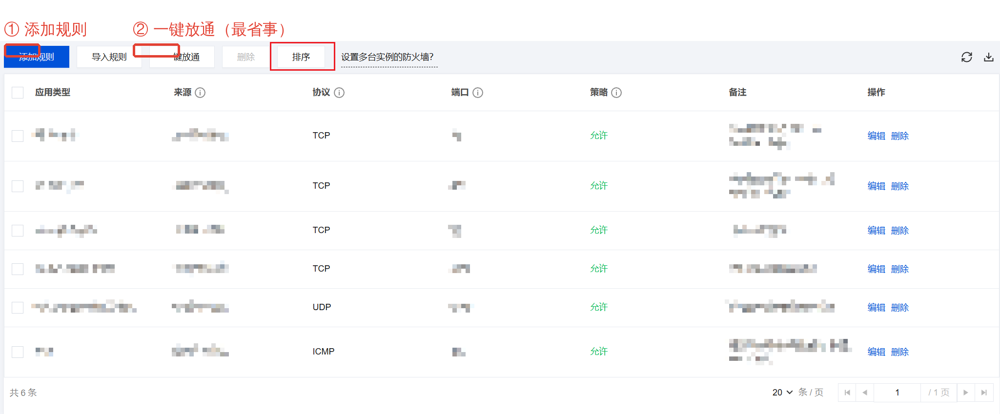

这台是轻量（Lighthouse），不是云服务器，所以入口在「防火墙」，不是「安全组」。图是腾讯云官方文档界面，红框是我标的。
控制台搜「轻量应用服务器」→ 实例列表里找名字带 lhins-k3vao65d 的那台（就是它）→ 点进详情 → 选「防火墙」页签。
点左上角「添加规则」，按下面填，确定即可（立即生效，不用重启）：
| 应用类型 | 自定义 |
| 协议 | TCP |
| 端口 | 443 |
| 来源 | 0.0.0.0/0 |
| 策略 | 允许 |
| 备注 | https（随便写） |
嫌麻烦就点「一键放通」，它一次把 22 / 80 / 443 / 3389 都放通。
